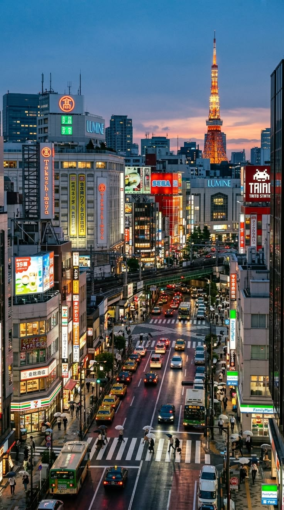

Japan's capital, is located on the Pacific coast of central Honshu at the head of Tokyo Bay.
Historically known as Edo, it became the imperial capital in 1868 and is now the heart of the Greater Tokyo metropolitan area, the world's largest urban agglomeration with an estimated population of 41.2 million.